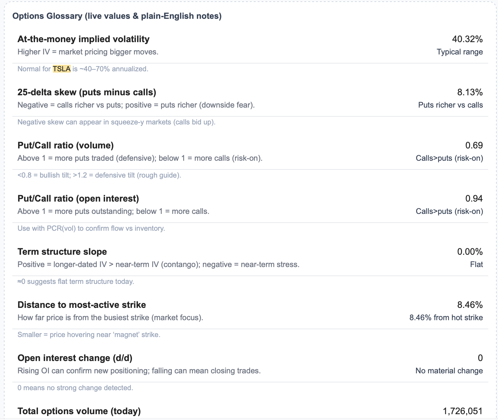

Stock Market Prediction Model Using Machine Learning
Developed a machine learning model to predict stock price movements using historical market data and technical indicators. Built using Python, the model utilized regression and classification techniques to analyze trends and generate predictions.
I applied feature engineering, cross-validation, and model tuning to improve accuracy and interpretability. The system was designed to support data-driven trading decisions by identifying patterns and probabilities in market behavior.
Key Tools & Technologies:
- Python (scikit-learn, XGBoost)
- Data Analysis & Feature Engineering
- Machine Learning Models
- Pandas & NumPy